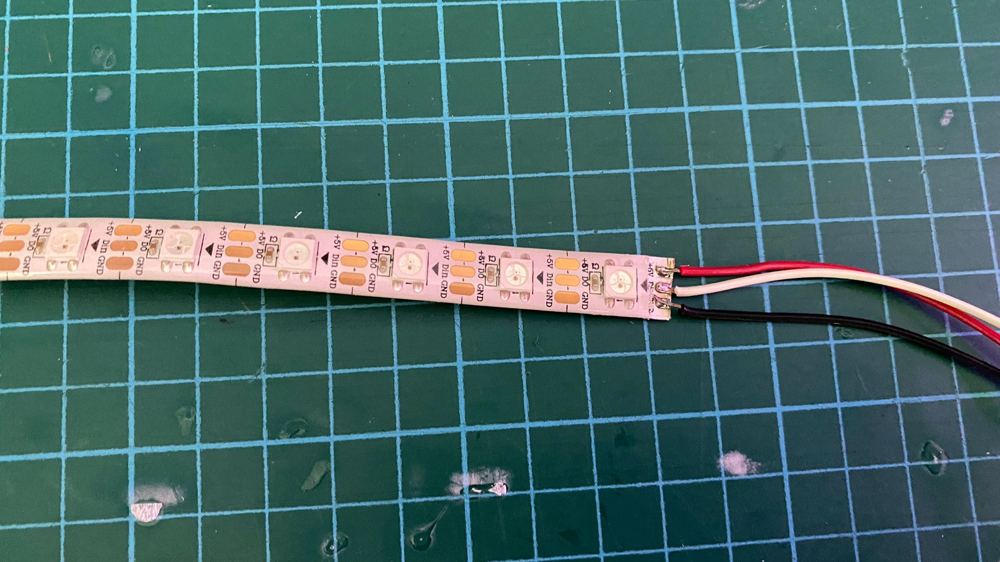

Final Project
Planning
For my final project, i wanted to make a mood lamp using RGB lights, that was able to switch lighting modes through the use of a push button. While the brightness of the lamp could be toggled using a potentiometer. Hence, i planned out my Bill of Materials and began working on my project.
Fabricating PCB Board
The next step was to plan and fabricate my pcb board needed for the elecetronics part of the project.First, i brought in and connected up all the components needed in the app EAGLE (the same process i used for electronics design)
Next, i then moved onto drawing out the traces itself by connecting up my circuit. Prior to the previous time designing my pcb, i had learned that i could actually increase the width of some of the traces that were in the outer parts of the board. This is to increase the chances of the traces being cut. This is due to the fact that because the bed of the cnc cutter has been used many times, the strip board which will be stuck onto the bed later on may be uneven, thus causing some traces to be cut deeper than others. Meanwhile, traces that are in the middle of the pcb remain the same default thickness of 16.
I then drew out the border of the board which will be the outline of my pcb.
Next, i exported both the image of the traces and outline as a png image, making sure that the image was of 1000 dpi and in monochrome, as these settings would be very important later on when generating the G-code.
But before i could generate the G-code, i had to edit the PNG image of the outline of the board, to enable the G-code to generate properly. Using GIMP, i painted the center of the image white.
I then opened up themods programme, the same programme i used to create the G-code for all my pcb projects previosuly done and generated the G-code for my traces and outlines in two seperate files.
Next, i transfered the two files containing the G-code onto the CNC machine, installed the 0.1mm cutter and started to mill out my traces.
The cutter was then replaced with a thicker cutter to cut out the outline of the board.

Next, i grabbed the components needed,
Final PCB Board
However, due to my carelessness, i accidentally ripped out on of the 2 pin headers on my board, severing the traces connecting to the 2 pin header, creating an open circuit in the pcb. Hence "surgery" was needed to be performed on my board which i will be doing later on to save the connections on it.
Fabrication
After having fabricated the pcb, i had a rough gauge on the ampount of space i needed inside the shell and base of my lamp. Hence i launched Fusion360, and started designing my lamp.
I started with designing the base of my lamp, taking into account and making sure i had enough space to fit in all of my components. I also set up parameters in Fusion360 to enable me to quickly edit the thickness, length and width of the lamp if there were any changes to be made.
I then used the combine function to cut of some parts of the base, to make the top half of the lamp be able to press fit onto the base of the lamp.
Next, i designed the interior housing of the lamp which would be holding onto the various components of my project. I started of with the main body which would hold both the pcb and the neopixels.
Next, i made the housing for both the pushbutton and potentiometer. I also designed an extra button which would sit on top of the push button to make it easier to be pressed later on. Making sure all of the items could fit into the base.

The parts were now ready to be sent to a 3D printer to be printed out. However, upon simulating the print on CURA, i noticed that the print time could be shortened if i seperated the middle section of the holder.

I then simulated all of the printes on CURA and began 3D Printing all of the parts i needed.
Final 3D Printed Items
Next, i collected a piece of 3mm semi transparent acrylic from my teachers which was to be cut on a laser cutter to obtain the pieces for the top half of my lamp. I saved the sketches of the pieces of the top half of the lamp as DXF files and transfered them onto the laser cutter. I then layed out the pieces on the app, set up the settings for the laser cutter and proceeded to cut the pieces out.
To prepare for the next step which was to cut out the pieces, similar to the furniture i cut at 2D Machining, i added dogbone fillets onto my design.
The next step was to fabricate the base of my lamp using the large scale CNC Machine. To set up the cut, similar to the cut on the laser cutter, i saved the pieces of my base as dxf and transefered it to the computer connected to the large scale CNC machine. However, it was not as simple as that, the pieces that i had to cut had 2 parts to it. There was a pocketing operation before the actual cut came out. Hence, i had to export the area where there was a pocketing operation, and aligned them in the computer itself.
The rectangles above the pieces was where the pocketing operation was to take place. Hence, that was the cutting operation i used for the rectangles first. I simulated it to check, before moving on to cutting out the outline of the pieces. I added tabs to make sure that the pieces would stay intact onto the stock material when it was being cut out. I did a final simulation to check and make sure everything was being correctly cut out.
When everything was ok, i then secured the stock onto the bed using a drill and some screws.
Next, i set the X, Y and Z axis to zero on the stock bed and started the cut.
Final Cut Out Pieces
Electronics
To prepare for the testing of my electronics, i soldered on some dupont wires onto my power jack, push button and neo pixel. The dupont wire heads would then be connected onto the pin headers on my pcb board.


Next, to check if my board was working properly, i connected my ISP programmer which i made here. I opened up the command prompt on my computer, and typed in "avrdude -pt85 -cusbtiny". It then showed me "FUSES OK" signaling that everything was connected properly.

Next, i loaded up arduino and set up the necessary settings to programme my pcb, before pressing "Burn Bootloader" to finalise the settings.

I then connected up everything, and began trying to code the neopixels to work.
However, this was where i accidentally ripped out one of the two pin headers, and hence creating an open circuit. The next procedure was to perform "surgery" on the pcb to get the connections connected together.
Assembly
Before getting ready to assemble everything together, i first prepared the pieces of the base as they had to be filed and sanded down to give a smooth finish.
Next, the interior part which was 3D printed also had to be glued together. Furthermore, the 40mm white pvc tube had to be glued onto the top of the interior part. The neopixels would then be stuck onto the white pvc tube.

I then drilled three holes - (two 3mm and one 10mm) on one side of the base for the push button.

I repeated the same steps for another side of the base for the potentiometer, but this time the middle hole would be 5mm.

I repeated the steps a third time, this time drilling a 12mm hole at the back side of the lamp on one of the pieces to fit the power jack in.

Next, the top half of the lamp also needed to be glued together. I used super glue to glue the acrylic pieces together, as although it could make a mess on the acrylic, the acrylic was semi-transparent hence it was hardly noticeable.
There was no other parts that needed to be glued on, as i when designing the lamp, i made sure all the pieces were press fit so as to make the interior electronics easily accesible by just removing a few pieces.
And just like that the project was complete when all the connections were wired together and the power jack was plugged in.
Final Product
Presentation Slide